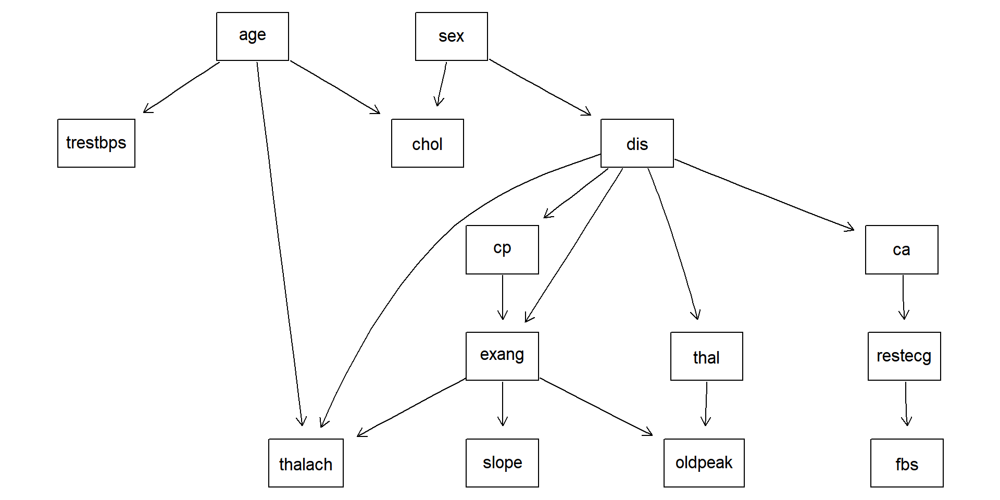

| Location | Complete cases |
|---|---|
| ch | 0 |
| cl | 297 |
| hu | 1 |
| va | 1 |


Main Analysis (imputed data)
Fitted Models
- For the RF model we used a \(10\) fold cross validation to assess the number of trees to be averaged and the maximum node size. The proportion of predictors to be used to grow the trees is set to \(\sqrt(p)\).
- For the BART we validated the number of trees per iteration (
ntree), the prior variance of \(f(x)\) (k) and two parameters for controlling the probability of split (baseandpower): \[\Pr(\text{split at depth }d) = \text{base} \cdot (1+d)^{-\text{power}}\] - With the BN model we learned the structure from the data, using the blacklist on the right and BIC penalization for the number of arcs. Then, we learned the parameters with
bn.fit()and predicted the response.
- For the fixed structure methods (NB and TAN) we simply learned the parameters and predicted the output class as above, using the predictors as hard evicende.

DAG used for BN fit
| from | to |
|---|---|
| every node | sex |
| every node | age |
Blacklist used for BN fit